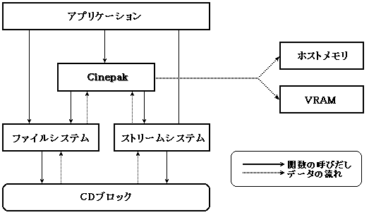
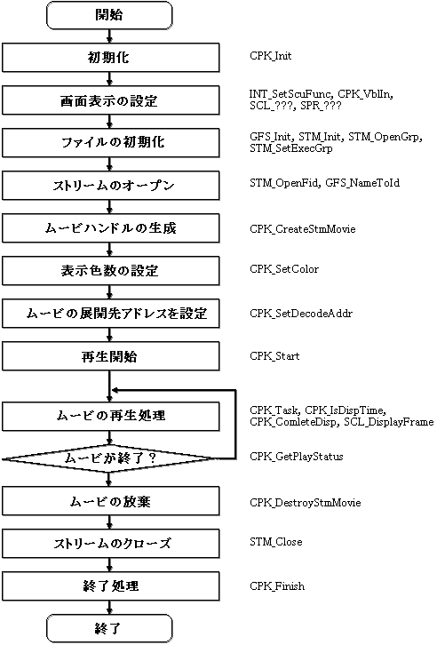

★MOVIE TOOLS GUIDE
★Cinepak for SEGASaturn
★MOVIE TOOLS GUIDE
★Cinepak for SEGASaturn
Cinepakライブラリは、QuickTime(Cinepak圧縮)ムービを簡単にSEGASATURN上で再生するためのライブラリです。
図4.1 Cinepakライブラリの構成図

図4.2 メモリ再生時のムービ再生手順

#define WORK_BUF_SIZE 200*1024L #define PCM_ADDR ((void*)0x25a20000) #define PCM_SIZE (4096L*16)/* ワークバッファ */ Uint32 movie_work[CPK_24WORK_DSIZE]; /* リングバッファ */ Uint32 movie_buf[WORK_BUF_SIZE/sizeof(Uint32)]; StmHn stm; CpkHn cpk; Sint32 movie_x = 320;
/* 初期化 */ CPK_Init();
/* 画面表示の設定 */ INT_??? を使いVブランクIN割り込みを設定する。 VブランクIN割り込み内で CPK_VblIn(); をコールする。 スプライトコマンドなどの設定を行う。
/* ファイルの初期化 */ GFS_Init(‥); STM_Init(‥); STM_OpenGrp(); STM_SetExecGrp(‥); /* ストリームのオープン */ stm = STM_OpenFid(‥);
/* ムービハンドルの生成 */ CPK_PARA_WORK_ADDR(¶) = movie_work; CPK_PARA_WORK_SIZE(¶) = CPK_24WORK_BSIZE; CPK_PARA_BUF_ADDR(¶) = movie_buf; CPK_PARA_BUF_SIZE(¶) = WORK_BUF_SIZE; CPK_PARA_PCM_ADDR(¶) = PCM_ADDR; CPK_PARA_PCM_SIZE(¶) = PCM_SIZE; cpk = CPK_CreateStmMovie(¶, stm);
/* 表示色数の設定 */ CPK_SetColor(cpk, CPK_COLOR_15BIT); /* 展開先のアドレスの設定 */ CPK_SetDecodeAddr(cpk, ADDR_VRAM, 2 * movie_x); /* ムービの再生開始 */ CPK_Start(cpk); while(TRUE) { /* ムービの再生処理 */ CPK_Task(cpk); if (CPK_IsDispTime(cpk) == TRUE) { /* フレームバッファの切り替え待ち */ SCL_DisplayFrame(); CPK_CompleteDisp(cpk); } /* ムービの終了判定 */ if (CPK_GetPlayStatus(cpk)==CPK_STAT_PLAY_END) break; } /* ムービの放棄 */ CPK_DestroyStmMovie(cpk); /* ストリームのクローズ */ STM_Close(stm);
★MOVIE TOOLS GUIDE
★Cinepak for SEGASaturn